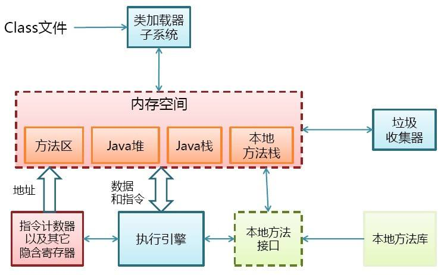
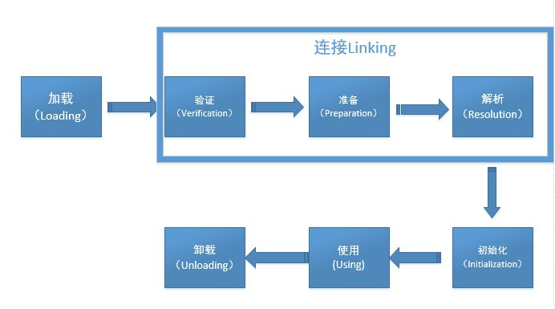
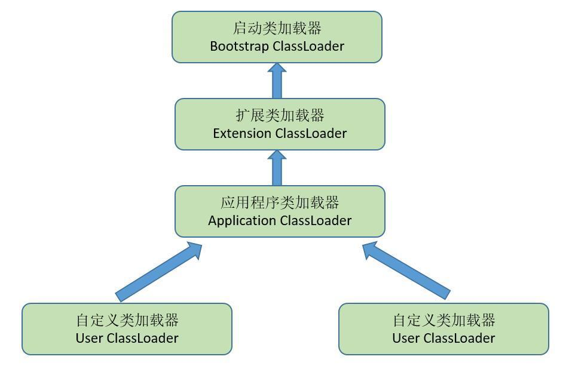

这篇博客—干货很多！！！
Java虚拟机的体系结构
前面我们探讨了Class文件的结构，如果你还没有学习，将不利于这部分知识的吸收与掌握，所以请移步：JVM–Class类文件结构（一）
学习一个东西之前，我们务必要知道，这东西大概是干什么的，有什么作用。
为了更清楚的阐释类加载机制到底是干什么的，我先将JVM的结构图贴给大家：

如上图，我们要学的类加载机制就是要搞清楚类加载器是如何找到指定的Class文件以及怎样将Class文件装载进内存，以便执行引擎执行Class文件中存在的数据和指令，从而使你的Java程序跑起来。
上面的黑体字就是这玩意大概是干啥的，至于学习它有什么作用，有助于你了解Java源代码是怎么从一个普通的文件变成一个可以正在运行的程序这其中的过程。而且，学习了这部分知识，你再回过头看反射机制，会有一种醍醐灌顶的感觉。
类的生命周期
先来看一下类的生命周期吧：

结合上图，类加载机制主要学习加载、验证、准备、解析、初识化这些过程，然后就是需要了解真正可以将类加载进内存的一个玩意（还是代码实现）—类加载器！
其实，有了前面Class文件结构的基础，这些东西都很简单，不要怕～
额外补充：
上图中解析和初始化的位置是可以互换的，如果解析一旦在初始化之后开始，这就是我们经常所说的“动态绑定”～～
除此之外，这些阶段通常都是互相交叉的混合式进行，各个阶段只保证按部就班的开始，并不保证按部就班的进行或完成。
类加载的过程
我们根据上面所说的类的生命周期来一点点剖析类的加载过程。
加载
我们首先要明白一件事情：什么开始进行类加载过程的第一阶段：加载？Java虚拟机没有进行强制约束，交由虚拟机的具体实现自由把握。
看完上面的话，我们来看在加载阶段，虚拟机需要完成哪些事情：
- 通过一个类的全限定名来获取定义此类的二进制字节流
- 将获取到的二进制字节流转化成一种数据结构并放进方法区
- 在内存中生成一个代表此类的java.lang.Class对象，作为访问方法区中各种数据的接口
我们需要注意一些事情：
对于方法区的认识：被加载的类的信息存储在方法区中，可以被线程所共享，也就是说，加载阶段完成后，虚拟机外部的二进制字节流就按照虚拟机所需的格式存储在了方法区之中。然后你能想起来那个二进制流中都存储了哪些信息吗？
对于Class对象认识：Class对象虽然是在内存中，但并未明确规定是在Java堆中，对于HotSpot来说，Class对象存储在方法区中。它作为程序访问方法区中二进制字节流中所存储各种数据的接口。你能大概想到反射机制中的Class对象是怎么一回事了吗？为什么可以在运行期通过反射机制得到那么多的类信息你能猜测到吗？
验证
从上面类的生命周期一图中我们可以看出，验证是连接的第一步，这一阶段的目的主要是为了确保Class文件的字节流中包含的信息符合当前虚拟机的要求，从而不会危害虚拟机自身安全。也就是说，当加载阶段将字节流加载进方法区之后，JVM需要做的第一件事就是对字节流进行安全校验，以保证格式正确，使自己之后能正确的解析到数据并保证这些数据不会对自身造成危害。
验证阶段主要分成四个子阶段：
- 文件格式验证
- 元数据验证
- 字节码验证
- 符号引用验证
我不在这里详细的说明每一阶段的校验主要干了什么事情，有兴趣的同学可以自行百度。
挑点重点来说吧，对字节流进行校验是由一个叫做Class文件检验器的东西所完成，其实还是代码实现。
而什么叫做元数据呢？
所谓的元数据是指用来描述数据的数据，更通俗一点就是描述代码间关系，或者代码与其它资源（例如数据库表）之间内在联系的数据，你也可以更简单的认为成框架中的各种@注解，因为这些@注解很简介的描述了大量有关各个类、方法、字段额外的信息或之间的联系。
元数据验证也就是验证这些额外的信息或它们之间的联系是否正确。
我们还得注意字节码验证，在字节码验证中涉及到了一个概念：字节码流。
字节码流 = 操作码 + 操作数。
操作码就是伪指令，操作数就是普通的Java数据，如int，float等等。
所以对字节码验证的过程就是对字节码流验证的过程，也就是验证操作码是否合法，操作数是否合法。
而符号引用验证涉及到常量池解析的知识，在下文中我们顺带着将符号引用验证带过就行，现在先不说。
准备
准备阶段你只要掌握两个知识点：
- 准备阶段的目的：正式为类变量分配内存并设置类变量初始值的阶段，这些变量所使用的内存将在方法区中分配。
注意我的重点：是类变量（static）不是实例变量，还有，我们又知道了在JVM的方法区中不仅存储着Class字节流（按照运行时方法区的数据结构进行存储，上述的二进制字节流是不严谨的说法，只是为了大家好理解），还有我们的类变量。
- 这里的类变量初始值通常是指数据类型的零值。比如int的零值为0，long为0L，boolean为false… …真正的初始化赋值是在初始化阶段进行的。
额外一点，如果你设置的类变量还具有final字段，如下：
1 | public static final int value = 123; |
那么在准备阶段变量的初始值就会被直接初始化为123，具体原因是由于拥有final字段的变量在它的字段属性表中会出现ConstantValue属性。
解析
这一阶段我个人觉得不太好理解并且非常重要，但我还是会一点点剖析难点，保证你能听懂，所以开始吧～～
先来看一下解析阶段的目的：虚拟机将常量池内的符号引用替换为直接引用。
然后说一下解析阶段最大的特点：发生时间不可预料，有可能和初始化阶段互相交换位置。至于原因，我们等下再说。
先来说看完解析阶段的目的吧，你有可能有三个疑问。哪个常量池？什么符号引用？什么直接引用？Ok，搞清这三个问题，解析这部分你也就学会了。
首先来说常量池：在Class的文件结构中我们就花了大量的篇幅去介绍了常量池，我们再来总结一下：常量池(constant pool)指的是在编译期被确定，并被保存在已编译的.class文件中的一些数据。它包括了关于类、方法、接口等中的常量，也包括字符串常量。
然后这段话中的常量池指的就是存在于.class文件中的常量池，结果在运行期被JVM装载，并且可以扩充的存在于方法区中的运行时常量池。
然后来看符号引用：在Class文件中我们也讲述了什么是符号引用。总的来说就是常量池中存储的那些描述类、方法、接口的字面量，你可以简单的理解为就是那些所需要信息的全限定名，目的就是为了虚拟机在使用的时候可以定位到所需要的目标。
最后来看直接引用：直接指向目标的指针、相对偏移量或能间接定位到目标的句柄。
现在我们对上面那句话进行重新解读：虚拟机将运行时常量池中那些仅代表其他信息的符号引用解析为直接指向所需信息所在地址的指针。
大概就是这样，我觉得你应该已经完全明白了。
解决一个遗留的问题：还记得刚才没有说到的符号引用吗？
这一阶段就是发生在JVM将符号引用转换为直接引用的时候，它的作用就是对类自身以外（常量池中的各种符号引用）的信息进行匹配性校验，以确保解析动作能够正常执行！
在解析阶段主要有以下不同的动作，我只给大家罗列出来，不细讲，有兴趣的同学可以自行百度：
- 类或接口的解析（注意数组类和非数组类）
- 字段（简单名称+字段描述符）解析（注意递归搜索）
- 类方法解析（注意递归搜索）
- 接口方法解析（注意递归搜索）
在解析阶段还有一个很有意思的东西：动态连接！
它也是上面解析阶段发生时间不确定的直接原因：大部分JVM的实现都是延迟加载或者叫做动态连接。它的意思就是JVM装载某个类A时，如果类A中有引用其他类B，虚拟机并不会将这个类B也同时装载进JVM内存，而是等到执行的时候才去装载。
而这个被引用的B类在引用它的类A中的表现形式主要被登记在了符号表中，而解析的过程就是当需要用到被引用类B的时候，将引用类B在引用类A的符号引用名改为内存里的直接引用。这就是解析发生时间不可预料的原因，而且这个阶段是发生在方法区中的。
初始化
虚拟机规范定义了5种情况，会触发类的初始化阶段，也正是这个阶段，JVM才真正开始执行类中定义的Java程序代码：
- new一个对象、读取一个类静态字段、调用一个类的静态方法的时候
- 对类进行反射调用的时候
- 初始化一个类，发现父类还没有初始化，则先初始化父类
- main方法开始执行时所在的类
- 最后一种情况我也不懂，就不贴了
额外补充：
有三种引用类的方式不会触发初始化（也就是类的加载），为以下三种：
- 通过子类引用父类的静态字段，不会导致子类初始化
- 通过数组定义来引用类，不会触发此类的初始化
- 引用另一个类中的常量不会触发另一个类的初始化，原因在于“常量传播优化”
来说一说常量传播优化吧（先看一份代码）：
1 | public class ConstClass { |
这种调用方式不会触发ConstClass的初始化，因为常量传播优化，常量“hello world”已经被存储到了NotInitialization类的常量池中，以后NotInitialization对常量ConstClass.HELLOWORLD的引用实际上都被转化为NotInitialization对自身常量池的引用。
然后在初识化阶段我们重点掌握的知识就是类构造器<clinit>()了。
这个东西我也只是提几点重要的：
- <clinit>()是编译器自动收集类中的所有类变量的赋值动作和静态语句块合并产生的。
- 父类中定义的静态语句块要优先于子类的变量赋值操作。
- 虚拟机保证一个类的<clinit>()方法在多线程环境中被正确的加锁、同步。
方法区使用实例
上面讲了那么多，不知道大家吸收了没有，学习的过程中一定要学会总结和抓中重点哦～
咱们来看一个例子将上面类加载的过程来串一下吧，加深一下自己的印象：（其中还涉及了一点执行引擎的知识，没关系，很容易理解）
1 | class Lava { |
不同的虚拟机实现可能会用完全不同的方法来操作，下面描述的只是其中一种可能——但并不是仅有的一种。
加载：读取一个类的class文件并将其中的二进制字节流组织成正确的数据结构放进运行时方法区中：
要运行Volcano程序，首先得以某种“依赖于实现的”方式告诉虚拟机“Volcano”这个名字。之后，虚拟机将找到并读入相应的class文件“Volcano.class”，然后它会从导入的class文件里的二进制数据中提取类型信息并放到方法区中。通过执行保存在方法区中的字节码，虚拟机开始执行main()方法，在执行时，它会一直持有指向当前类（Volcano类）的常量池（方法区中的一个数据结构）的指针。
注意：虚拟机开始执行Volcano类中main()方法的字节码的时候，尽管Lava类还没被装载，但是和大多数（也许所有）虚拟机实现一样，它不会等到把程序中用到的所有类都装载后才开始运行。恰好相反，它只会需要时才装载相应的类。（延迟加载、动态连接）
main()的第一条指令告知虚拟机为列在常量池第一项的类分配足够的内存。所以虚拟机使用指向Volcano常量池的指针找到第一项，发现它是一个对Lava类的符号引用，然后它就检查方法区，看Lava类是否已经被加载了。
这个符号引用仅仅是一个给出了类Lava的全限定名“Lava”的字符串。为了能让虚拟机尽可能快地从一个名称找到类，虚拟机的设计者应当选择最佳的数据结构和算法。
当虚拟机发现还没有装载过名为“Lava”的类时，它就开始查找并装载文件“Lava.class”，并把从读入的二进制数据中提取的类型信息放在方法区中。
解析：
紧接着，虚拟机以一个直接指向方法区Lava类数据的指针来替换常量池第一项（就是那个字符串“Lava”），以后就可以用这个指针来快速地访问Lava类了。这个替换过程称为常量池解析，即把常量池中的符号引用替换为直接引用。
终于，虚拟机准备为一个新的Lava对象分配内存。此时它又需要方法区中的信息。还记得刚刚放到Volcano类常量池第一项的指针吗？现在虚拟机用它来访问Lava类型信息，找出其中记录的这样一条信息：一个Lava对象需要分配多少堆空间。
JAVA虚拟机总能够通过存储在方法区的类型信息来确定一个对象需要多少内存，当JAVA虚拟机确定了一个Lava对象的大小后，它就在堆上分配这么大的空间，并把这个对象实例的变量speed初始化为默认初始值0。
当把新生成的Lava对象的引用压到栈中，main()方法的第一条指令也完成了。接下来的指令通过这个引用调用Java代码（该代码把speed变量初始化为正确初始值5）。另一条指令将用这个引用调用Lava对象引用的flow()方法。
类加载器
其实这一部分的知识并不多，你需要了解、掌握的知识只有两点：
- 类加载器的命名空间
- 双亲委派模型
说一点啊，看到这些高大上的名词你们不要怕，又不让你拿代码去实现，其实其中的原理都是很简单的。
上面说了那么多，类加载器就是用于实现类加载动作的一段代码实现。好了，明白了它的作用，我们来看看什么是它命名空间。
类加载器的命名空间：对于任意一个类，都需要由加载它的类加载器和这个类本身一同确立其在Java虚拟机中的唯一性，每一个类加载器，都拥有一个独立的类命名空间。也就是说，你现在要比较两个类是否相等，只有在这两个类是同一个类加载器加载的前提下才有意义。
这就是类加载器的命名空间，不难吧～但是读完上面这段话我们可以提取出另一个重要的信息：你上面所说的话中好像包含这样一种意思：类加载器在JVM中不止一个？你很聪明！好了，接下来说明何谓双亲委派模型。
双亲委派模型：首先你得知道在JVM中有三种系统提供的类加载器：启动类加载器，扩展类加载器、应用程序类加载器。关于这三种加载器的描述大家自行百度，这也不是重点。
贴一张图：

如图，这种层次结构就是双亲委派模型。
好了，为了让大家印象深刻，我在给大家描述一下双亲委派模型的工作过程吧：
它是一个递归调用类加载器的模型，也就是说如果一个类加载器收到了类加载的请求，它首先不会自己去加载这个类，而是不断请求父加载器，如果父加载器可以完成这个加载请求，那么就由父加载器进行加载，如果父加载器不能完成加载请求（它的搜索范围中没有找到所需的类），子加载器才会尝试自己去加载。
那么使用这种模型有什么好处？
Java类随着类加载器一起具备了带有优先级的层级关系。例如java.lang.Object，在程序的各种类加载器环境中都是同一个类。
关于双亲委派模型的实现代码非常简单，我就不再贴出，有兴趣的同学可以研读《深入理解Java虚拟机》第二版中232页的内容。
参考阅读
《深入理解Java虚拟机》—周至明